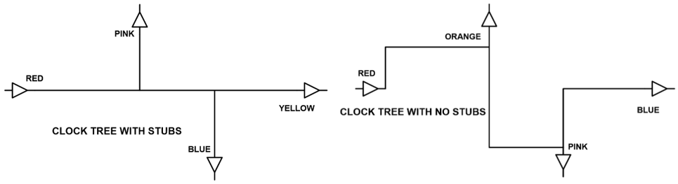

定义：从driver到最远的load之间最长的path是一个transmission line的main line，而any branch off the main line则被称作stub。

上左图中main line是RED到YELLOW，右图则是RED到BLUE。由于右图将所有branch的长度控制得很短，所以认为移除了stub。
当stub的另一端是open end，由于没有absorber和termination，全部信号都会被reflect。这种情况对于波长为4倍stub length的信号来说由为严重，因为经过round trip之后reflected wave正好是反相的，会直接cancel掉原信号。也就是说This shorting of the signal will occur at all frequencies at which the stub is an odd multiple of a quarter wave.（对于RF Engineer，有时会利用这个特性来设计band stop filter，移掉特定的frequency。但对于digital信号的方波，则要避免这种stub。因为方波包含了所有的frequency，如果其中一些被去掉了会影响rise/fall time）